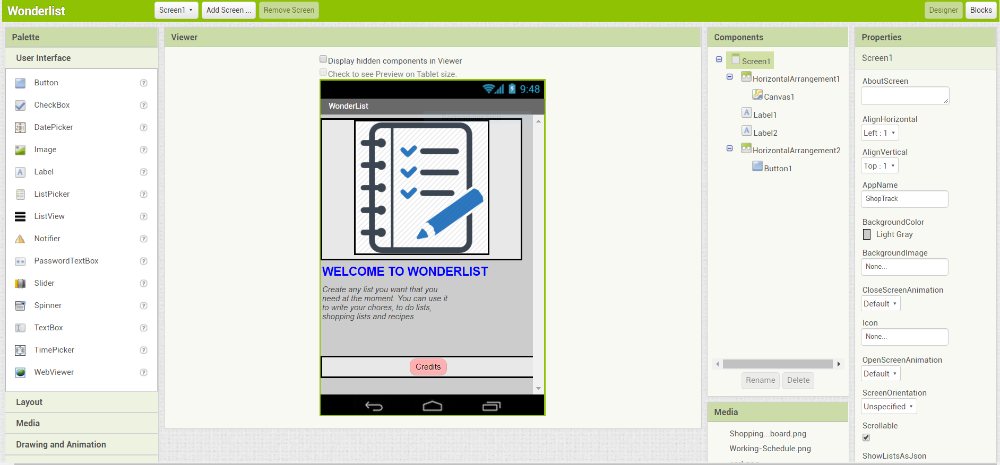

This is a remix of the Greeting Card Scratch Starter. My partner and I changed the orginal Happy Birthday theme to a theme about our passion and love about boba.
My partner, Wendy Li, and I created a game called CorgiDorky. It's a really fun and entertaining game that involves shooting dog treats to a corgi.
My partner, Grace Xu, and I created an app that could benefit those who need a shopping list and to do list in their mobile devices so they can access them from the touch of their hands. It is user friendly so it is easy to you for everyone and it is a beneficial app. The app was created for those who lose their papers and everyone seems to have a phone these days so it'll always be with you. The shopping lsit has a textbox where you can add the prices of your items and see how much each one is worth. For the to do list, it can help with you to check your chores and schedules.
My partner, Michael Choi, and I created an interactive story using Python. The setting is a typical school day, featuring Michael as the main character. The story is called "Michael's Typical Day. You can select his options and see how his day ends. You'll be able to see whether his day ends happily or not.